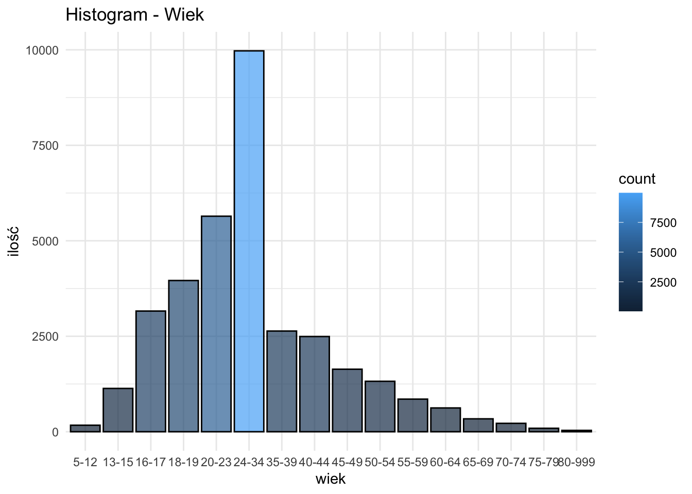
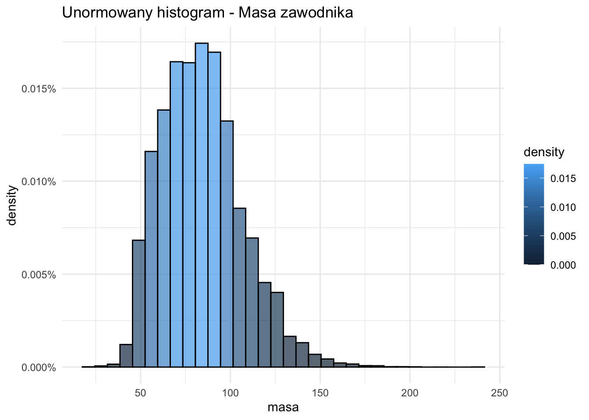
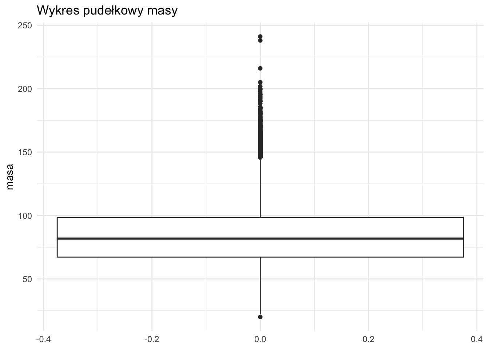
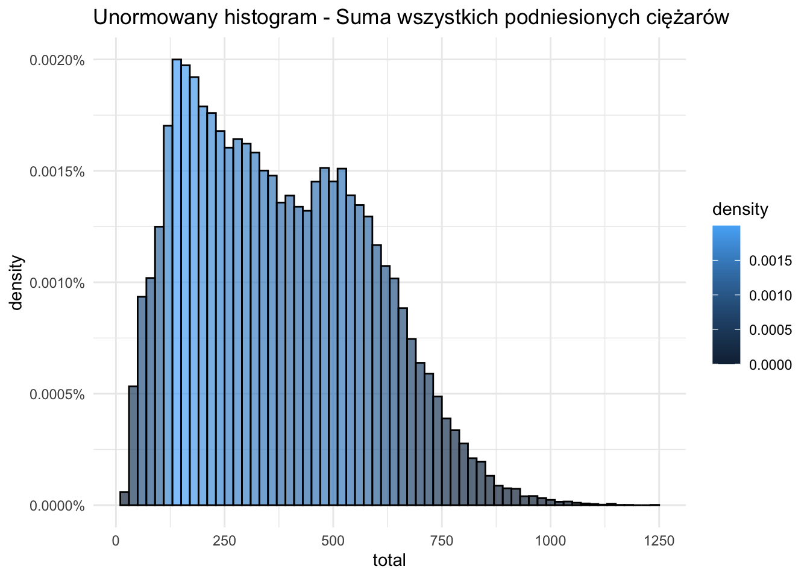
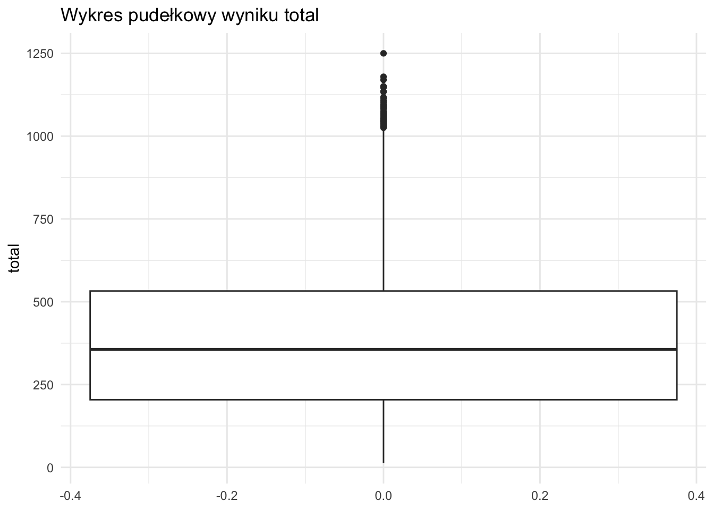
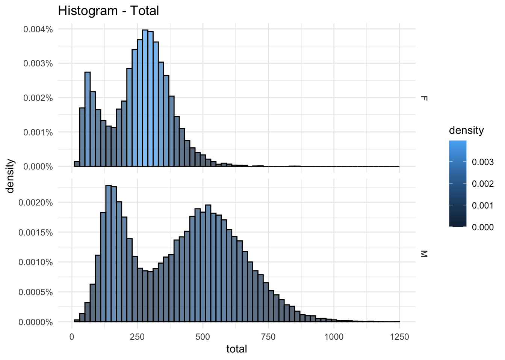
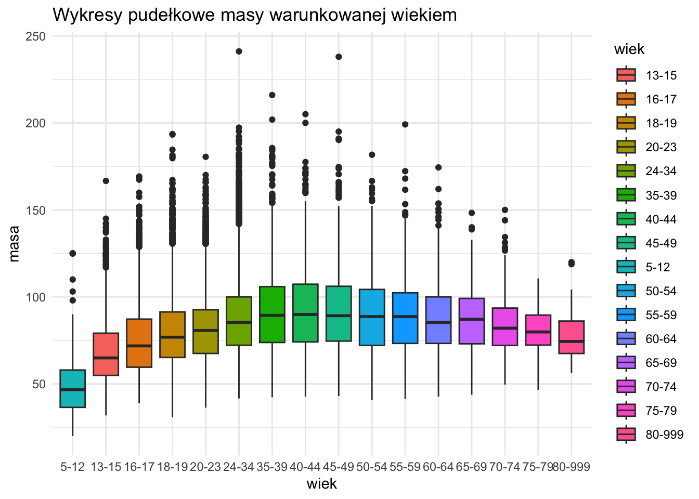
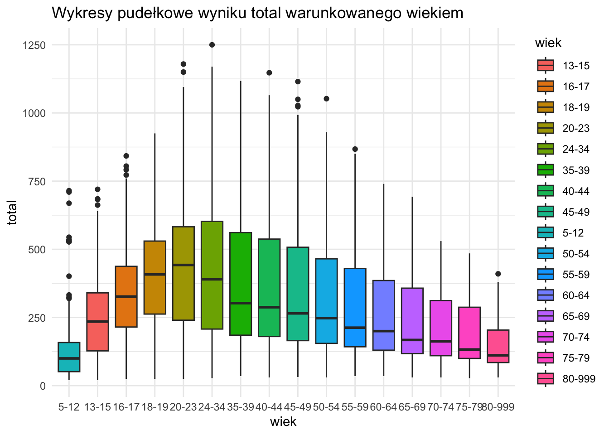
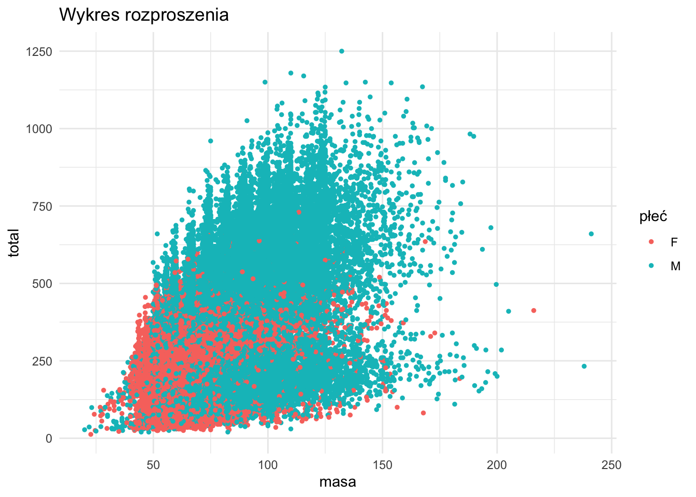
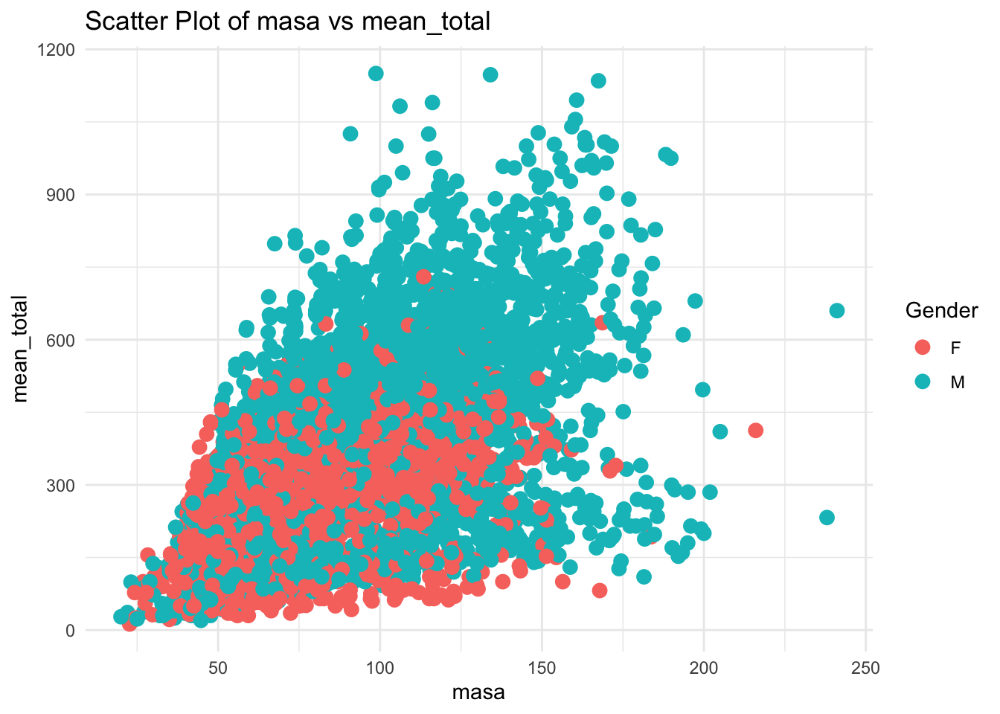

library(tidyverse)
library(knitr)
library(e1071)Analiza wyników w trójboju siłowym Raport 1. Pakiety statystyczne
1. Wstęp
Przedmiotem analizy są dane ze zbioru zawierającego informacje na temat trójboistów zrzeszonch w ramach federacji IPF. Dane zostały udostępnione na warunkach licencji GNU AGPLv3. Głównymi zmiennymi, które będą nas interesować są AgeClass, Sex (zmienne kategoryczne określające przedział wiekowy zawodnika oraz jego płeć) oraz zmienne ciągłe BodyweightKg, TotalKg, które wyrażają masę ciała zawodnika, oraz wynik całkowity będący sumą wyników w poszczególnych bojach (przysiad ze stangą, wyciskanie na ławce oraz martwy ciąg).
1.1 Opis zmiennych
AgeClass (Wiek)- zmienna kateogryczna reprezentująca przedziały wiekowe według, których klasyfikowani są zawodnicy. Przyjmuje wartość najmniejszą 5-12 oraz największą 80+
Sex (Płeć)- zmienna kategoryczna określająca płeć zawodnika.
BodyweightKg (Masa)- zmienna reprezentująca masę ciała zawodnika w kilogramach. Masa ciała jest istotnym parametrem w trójboju siłowym, ponieważ klasyfikuje zawodników w odpowiednie kategorie wagowe i może wpływać na ich wydajność w zawodach.
TotalKg (Wynik) - zmienna ta odnosi się do sumy maksymalnych ciężarów, które zawodnik podniósł w trzech bojach: przysiadzie ze sztangą, wyciskaniu na ławce leżąc oraz martwym ciągu. Jest to główny wskaźnik wydajności w trójboju siłowym, odzwierciedlający siłe i umiejętności zawodnika. W dalszej części raportu będdziemy używać określeń takich jak Wynik sumaryczny, całkowity, total.
1.2 Pytania badawcze
W ramach analizy postaramy się odpowiedzieć na następujące pytania:
Czy istnieje zależność między wagą a wynikiem całkowitym?
Jakie parametry opisują rozkłady poszczególnych zmiennych?
W jaki sposób różnią się rozkłady wyniku oraz wagi w zależności od wieku i płci?
2. Ładowanie danych
Wpierw przystąpimy do załadowania potrzebnych bibliotek
Teraz odczytamy dane z pliku csv.
probka <- read.csv("../powerlifting.csv")Będziemy poddawać analizie próbkę o długości 49 999 obserwacji.
nrow(probka)[1] 49999Tak się prezentuje 10 początkowych obserwacji
head(probka) Name Sex Event Equipment Age AgeClass BirthYearClass
1 K Leong M B Raw NA 18-19
2 Sergei Khitrov M SBD Raw 38.0 35-39 24-39
3 Michael Werschem M SBD Wraps 20.0 20-23 19-23
4 Ray Hickman M B Multi-ply 28.5 24-34 24-39
5 John Robinson M B Multi-ply NA 40-44 40-49
6 Alexis Lafever F SBD Single-ply NA
Division BodyweightKg WeightClassKg Squat1Kg Squat2Kg Squat3Kg Squat4Kg
1 17+ 82.5 82.5 NA NA NA NA
2 Open 86.6 90 200 210 212.5 NA
3 Juniors 20-23 103.6 110 175 195 225.0 NA
4 Open 75.0 75 NA NA NA NA
5 Masters 40-44 NA 140+ NA NA NA NA
6 Girls 82.1 82.3 NA NA NA NA
Best3SquatKg Bench1Kg Bench2Kg Bench3Kg Bench4Kg Best3BenchKg Deadlift1Kg
1 NA NA NA NA NA 65.00 NA
2 212.5 160.0 -165 165.0 NA 165.00 240.0
3 225.0 112.5 125 -137.5 NA 125.00 207.5
4 NA NA NA NA NA 177.50 NA
5 NA NA NA NA NA 328.85 NA
6 NA NA NA NA NA NA NA
Deadlift2Kg Deadlift3Kg Deadlift4Kg Best3DeadliftKg TotalKg Place Dots
1 NA NA NA NA 65.00 6 44.03
2 260.0 270 NA 270.0 647.50 6 427.10
3 237.5 NA NA 237.5 587.50 1 356.26
4 NA NA NA NA 177.50 2 127.34
5 NA NA NA NA 328.85 1 NA
6 NA NA NA NA NA DQ NA
Wilks Glossbrenner Goodlift Tested Country State Federation
1 43.54 41.90 32.75 Yes Australia QLD PA
2 421.86 405.01 87.74 Russia IPL
3 352.75 336.82 72.99 Yes USA OK USPA
4 126.48 122.21 68.34 Yes USA WABDL
5 NA NA NA USA SC SPF
6 NA NA NA Yes THSWPA
ParentFederation Date MeetCountry MeetState MeetTown
1 IPF 2002-01-01 Australia
2 IPL 2017-12-15 Russia Dolgoprudnyy
3 IPL 2022-06-11 USA OK Norman
4 2000-08-05 USA OR Wilsonville
5 2008-07-19 USA AL Tuscaloosa
6 2017-01-14 USA TX Coronado Middle School
MeetName
1 Australian Schools Postal Bench Press
2 World Cup
3 Drug Tested Oklahoma State Championships
4 World Cup
5 Temple Gym Classic
6 Plainview Invitational2.1 Transformacje danych
Interesować nas będą tylko zmienne AgeClass, Sex, BodyweightKg, TotalKg
probka <- probka[, c("AgeClass", "Sex", "BodyweightKg", "TotalKg")]
summary(probka) AgeClass Sex BodyweightKg TotalKg
Length:49999 Length:49999 Min. : 20.00 Min. : 12.5
Class :character Class :character 1st Qu.: 67.20 1st Qu.: 204.1
Mode :character Mode :character Median : 81.90 Median : 356.1
Mean : 84.12 Mean : 378.3
3rd Qu.: 98.79 3rd Qu.: 533.0
Max. :241.10 Max. :1250.0
NA's :644 NA's :3339 Napotykamy pierwszy problem. Typy niektórych zmiennych są nieodpowiednie. Prawidłowe typy to
numericdla BodyweightKg, TotalKgfactordla AgeClass oraz Sex
Dokonajmy więc konwersji
probka$BodyweightKg <- as.numeric(probka$BodyweightKg)
probka$TotalKg <- as.numeric(probka$TotalKg)
probka$AgeClass <- as.factor(probka$AgeClass)
probka$Sex <- as.factor(probka$Sex)summary(probka) AgeClass Sex BodyweightKg TotalKg
:13418 F:12515 Min. : 20.00 Min. : 12.5
24-34 :10615 M:37484 1st Qu.: 67.20 1st Qu.: 204.1
20-23 : 6007 Median : 81.90 Median : 356.1
18-19 : 4300 Mean : 84.12 Mean : 378.3
16-17 : 3383 3rd Qu.: 98.79 3rd Qu.: 533.0
35-39 : 2819 Max. :241.10 Max. :1250.0
(Other): 9457 NA's :644 NA's :3339 Dokonamy teraz zmiany nazw kolumn na bardziej przystępne
colnames(probka) <- c("wiek", "plec", "masa", "total")
head(probka) wiek plec masa total
1 18-19 M 82.5 65.00
2 35-39 M 86.6 647.50
3 20-23 M 103.6 587.50
4 24-34 M 75.0 177.50
5 40-44 M NA 328.85
6 F 82.1 NANasze dane mają również rekordy z brakiem danych, zatem kolejnym krokiem jest usunięcie wierszy, w których takie braki się pojawiają.
probka <- probka %>% drop_na()Dzięki temu otrzymujemy zestaw danych, który swobodnie może być poddawanym analizom.
3. Analiza jednowymiarowa
W tej części zajmiemy się analizą statystyczną wybranych przez nas kategorii. Zmienne kategoryczne mają ograniczone możliwości co do analizy, dlatego ograniczymy się do histogramu i przedstawienia liczności.
3.1 Zmienna: Płeć
Dla tej zmiennej występują tylko dwie wartości M, F, oznaczające płeć zawodnika/zawodniczki. Przewaga mężczyzn nie jest zaskakująca.
Code
ggplot(probka, aes(x = plec, y = ..count.., fill = ..count..)) +
geom_bar(color = "black", alpha = 0.7, position = "identity") +
ggtitle("Histogram - Płeć") +
theme_minimal()
plec <- table(probka$plec)
procent_danych <- round(prop.table(plec) * 100, digits=2)
stats <- data.frame(Plec = as.character(names(plec)), Licznosc = as.numeric(plec), Procent = as.numeric(procent_danych))
knitr::kable(stats)| Plec | Licznosc | Procent |
|---|---|---|
| F | 11748 | 25.4 |
| M | 34510 | 74.6 |
Histogram zmiennej - Płeć
3.2 Zmienna: Kategoria wiekowa
Występuje tutaj 16 różnych wartości, przypisujących danego zawodnika do danej kategorii. Najwięcej osób startuje w kategorii wiekowej 24-34, co stanowi ok. 29% wszystkich zawodników. Kategorię 80-999 należy rozumieć jako osoby w wieku \(\ge 80\)
Code
desired_order = c("5-12", "13-15", "16-17", "18-19", "20-23", "24-34", "35-39", "40-44", "45-49", "50-54", "55-59", "60-64", "65-69", "70-74", "75-79", "80-999")
ggplot(probka, aes(x = wiek, y = ..count.., fill = ..count..)) +
geom_bar(color = "black", alpha = 0.7, position = "identity") +
labs(title = "Histogram - Wiek", x = "wiek", y = "ilość") +
scale_x_discrete(limits = desired_order) +
theme_minimal()
wiek_ilosc <- table(probka$wiek)
procent_danych <- round(prop.table(wiek_ilosc) * 100, digits=2)
stats <- data.frame(Wiek = as.character(names(wiek_ilosc)), Licznosc = as.numeric(wiek_ilosc), Procent = as.numeric(procent_danych))
knitr::kable(stats)
| Wiek | Licznosc | Procent |
|---|---|---|
| 11966 | 25.87 | |
| 13-15 | 1134 | 2.45 |
| 16-17 | 3160 | 6.83 |
| 18-19 | 3960 | 8.56 |
| 20-23 | 5644 | 12.20 |
| 24-34 | 9973 | 21.56 |
| 35-39 | 2637 | 5.70 |
| 40-44 | 2493 | 5.39 |
| 45-49 | 1637 | 3.54 |
| 5-12 | 171 | 0.37 |
| 50-54 | 1321 | 2.86 |
| 55-59 | 854 | 1.85 |
| 60-64 | 623 | 1.35 |
| 65-69 | 338 | 0.73 |
| 70-74 | 220 | 0.48 |
| 75-79 | 91 | 0.20 |
| 80-999 | 36 | 0.08 |
Histogram zmiennej - Kategoria wiekowa
3.3 Zmienna: Waga zawodnika
Dla tej zmiennej ciągłej można już przeprowadzić szereg analiz statystycznych oraz narysować wykres pudełkowy.
Code
ggplot(probka, aes(x = masa, y = ..density.., fill = ..density..)) +
geom_histogram(binwidth = 7, color = "black", alpha = 0.7, position = "identity") +
ggtitle("Unormowany histogram - Masa zawodnika") +
theme_minimal() +
scale_y_continuous(labels = scales::percent_format(scale = 1))
ggplot(probka, aes(y = masa)) +
geom_boxplot() +
ggtitle("Wykres pudełkowy masy") +
theme_minimal()

Wykresy dla zmiennej Masa
Na histogramie widzimy, że jest on prawostronnie skośny i prawie symetryczny. Ponadto zarówno histogram, jak i wykres pudełkowy wykazują dużą obecność tzw. outliersów, czyli wartości odstających, wywołanych niskim rozstępem międzykwartylowym. Wysoka intensywność występowania wartości skrajnych może sugerować dodatnią kurtozę nadwyżkową. Poniżej w tabeli przedstawione są podstawowe statystki dla tej zmiennej.
Code
summary_df <- data.frame(
Statystyki = c("Minimum", "Pierwszy kwartyl", "Mediana", "Srednia", "Trzeci kwartyl", "Rozstep miedzykwartylowy", "Maximum", "Wariancja", "Skosnosc", "Kurtoza nadwyżkowa"),
Wartosci = c(min(probka$masa), quantile(probka$masa, 0.25), median(probka$masa), mean(probka$masa), quantile(probka$masa, 0.75), IQR(probka$masa), max(probka$masa), var(probka$masa), skewness(probka$masa), kurtosis(probka$masa))
)
knitr::kable(summary_df)| Statystyki | Wartosci |
|---|---|
| Minimum | 20.0000000 |
| Pierwszy kwartyl | 67.2000000 |
| Mediana | 81.8000000 |
| Srednia | 83.9864408 |
| Trzeci kwartyl | 98.6000000 |
| Rozstep miedzykwartylowy | 31.4000000 |
| Maximum | 241.1000000 |
| Wariancja | 505.7357659 |
| Skosnosc | 0.6726162 |
| Kurtoza nadwyżkowa | 0.6523304 |
Wartość mediany jest zbliżona do wartości średniej, co wskazuje na dość dużą symetryczność rozkładu. Brak ich pokrycia wynika z istnienia wartości odstających. Skośność większa od 0 wskazuje na prawoskośność, co zgadza się z wnioskami odnośnie histogramu oraz jego wyglądem. Kurtoza nadwyżkowa większa od 0 oznacza, że rozkład jest leptokurtyczny. Istnieje jednak wiele podobieństw pomiędzy rozkładem mas zawodników oraz rozkładem normalnym. Rozbieżność występuje prawdopodobnie ze względu na niestandardowe warunki, którymi są zawody w trójboju siłowym. Zbiorem danych są sportowcy, a nie losowa grupa ludzi, przez co rozkład masy zawodników może bardziej różnić się od rozkładu normalnego, niż losowa próba z populacji.
3.4 Zmienna: Łączny wynik
Code
ggplot(probka, aes(x = total, y = ..density.., fill = ..density..)) +
geom_histogram(binwidth = 20, color = "black", alpha = 0.7, position = "identity") +
ggtitle("Unormowany histogram - Suma wszystkich podniesionych ciężarów") +
theme_minimal() +
scale_y_continuous(labels = scales::percent_format(scale = 1))
ggplot(probka, aes(y = total)) +
geom_boxplot() +
ggtitle("Wykres pudełkowy wyniku total") +
theme_minimal()

Wykresy dla zmiennej Total
Code
summary_df <- data.frame(
Statystyki = c("Minimum", "Pierwszy kwartyl", "Mediana", "Srednia", "Trzeci kwartyl", "Rozstep miedzykwartylowy", "Maximum", "Wariancja", "Skosnosc", "Kurtoza nadwyżkowa"),
Wartosci = c(min(probka$total), quantile(probka$total, 0.25), median(probka$total), mean(probka$total), quantile(probka$total, 0.75), IQR(probka$total), max(probka$total), var(probka$total), skewness(probka$total), kurtosis(probka$total))
)
knitr::kable(summary_df)| Statystyki | Wartosci |
|---|---|
| Minimum | 12.5000000 |
| Pierwszy kwartyl | 204.1200000 |
| Mediana | 356.0700000 |
| Srednia | 378.2211678 |
| Trzeci kwartyl | 532.5000000 |
| Rozstep miedzykwartylowy | 328.3800000 |
| Maximum | 1250.0000000 |
| Wariancja | 41887.4868748 |
| Skosnosc | 0.3981495 |
| Kurtoza nadwyżkowa | -0.6074609 |
4. Rozkłady warunkowe
4.1. Rozkłady zmiennych warunkowane płcią
Na wykresach poniżej znajdują się rozkłady zmiennych Masa oraz Total warunkowane zmienną Płeć. Z wykresów możemy zauważyć ewidentną bimodalność zmiennej Total dla określonej płci.
Code
ggplot(probka, aes(x = masa, y = ..density.., fill = ..density..)) +
geom_histogram(binwidth = 7, color = "black", alpha = 0.7, position = "identity") +
ggtitle("Histogram - Masa") +
theme_minimal() +
facet_grid(plec ~ ., scales = "free_y") +
scale_y_continuous(labels = scales::percent_format(scale = 1))
ggplot(probka, aes(x = total, y = ..density.., fill = ..density..)) +
geom_histogram(binwidth = 20, color = "black", alpha = 0.7, position = "identity") +
ggtitle("Histogram - Total") +
theme_minimal() +
facet_grid(plec ~ ., scales = "free_y") +
scale_y_continuous(labels = scales::percent_format(scale = 1))

4.2. Rozkłady zmiennych warunkowane wiekiem.
Na poniższych wykresach pudełkowych przedstawione są rozkłady zmiennych Masa i Total warunkowane zmienną Wiek.
Code
ggplot(probka, aes(x = wiek, y = masa, fill = wiek)) +
geom_boxplot() +
ggtitle("Wykresy pudełkowe masy warunkowanej wiekiem") +
scale_x_discrete(limits = desired_order) +
theme_minimal()
ggplot(probka, aes(x = wiek, y = total, fill = wiek)) +
geom_boxplot() +
ggtitle("Wykresy pudełkowe wyniku total warunkowanego wiekiem") +
scale_x_discrete(limits = desired_order) +
theme_minimal()

4.2.1. Wynik total a wiek.
Przypatrując się rozkładom zmiennej Total widzimy, że górne wąsy są znacznie dłuższe od dolnych oraz, że mediana jest bliżej pierwszego kwartyla. Dodatkowo różnice te zdają się narastać z wiekiem. Możemy zatem wywnioskować znaczną prawostronną skośność zmiennej Total warunkowanej Wiekiem. Dodatkowo skośność ta zwiększa się wraz ze wzrostem wieku. Potwierdza się to w danych z poniższej tabeli.
Code
wiek_ilosc <- table(probka$wiek)
stats <- probka %>% group_by(wiek) %>% summarize(Skosnosc = skewness(total), Kurtoza_nadwyzkowa = kurtosis(total))
knitr::kable(stats)| wiek | Skosnosc | Kurtoza_nadwyzkowa |
|---|---|---|
| 0.2780792 | -0.4331673 | |
| 13-15 | 0.3746677 | -0.4525842 |
| 16-17 | 0.0793386 | -0.5930804 |
| 18-19 | -0.1033734 | -0.7966307 |
| 20-23 | 0.0521875 | -0.8783159 |
| 24-34 | 0.3216442 | -0.9021865 |
| 35-39 | 0.6204089 | -0.6613723 |
| 40-44 | 0.6433957 | -0.6440888 |
| 45-49 | 0.7545083 | -0.3772775 |
| 5-12 | 2.4121606 | 6.6358645 |
| 50-54 | 0.7592848 | -0.4474953 |
| 55-59 | 0.8461354 | -0.4060648 |
| 60-64 | 0.7555853 | -0.5720298 |
| 65-69 | 0.8043215 | -0.5803235 |
| 70-74 | 0.7688846 | -0.6465690 |
| 75-79 | 0.9158347 | -0.5115341 |
| 80-999 | 1.1965920 | 0.4847552 |
4.2.2. Masa a wiek.
Patrząc zaś na boxploty opisujące masę zawodnika widzimy wiele wartości skrajnych większych niż \(Q_3 + 1,5\,\text{IQR}\) co jest przesłanką ku leptokurtyczności rozkładów warunkowych. Potwierdza się to w poniższej tabeli. Zjawisko to ma prostą interpretację. Otóż we wszystkich zawodach trójbojowych stosuje się kategorie wagowe aby zwodnicy konkurowali z rywalami do siebie podobnymi. Ostatnią kategorią są zazwykle kategorie typu 120+, 140+, które nie posiadają kresu górnego. Tym samym u tych zawodników optymalne jest posiadanie jak największej masy ciała aby zyskać przewagę nad rywalami. Powoduje to częste występowanie wartości skrajnych. Z wykresu widzimy, że intensywność obserwacji wartości skrajnych jest największa u młodszych zawodników, mniej więcej do 35-tego roku życia. To również ma oczywistą interpretację. Zawodnikom młodszym łatwiej jest niż starszym nabrać duże ilości masy ciała jednocześnie zachowując odpowiednią atletyczność celem uzyskiwania jak najlepszych wyników.
Code
wiek_ilosc <- table(probka$wiek)
stats <- probka %>% group_by(wiek) %>% summarize(Skosnosc = skewness(masa), Kurtoza_nadwyzkowa = kurtosis(masa))
knitr::kable(stats)| wiek | Skosnosc | Kurtoza_nadwyzkowa |
|---|---|---|
| 0.6626515 | 0.3105583 | |
| 13-15 | 1.1867187 | 1.7087924 |
| 16-17 | 0.9426102 | 0.8932897 |
| 18-19 | 0.9770704 | 1.3976272 |
| 20-23 | 0.6631823 | 0.7298725 |
| 24-34 | 0.6850341 | 0.9967756 |
| 35-39 | 0.5599211 | 0.6767956 |
| 40-44 | 0.4696464 | 0.2185508 |
| 45-49 | 0.6895150 | 1.2378278 |
| 5-12 | 1.5794701 | 3.0748251 |
| 50-54 | 0.4386190 | -0.0745676 |
| 55-59 | 0.5136044 | 0.5761644 |
| 60-64 | 0.6081655 | 0.5912268 |
| 65-69 | 0.2940936 | -0.0756863 |
| 70-74 | 0.7152542 | 0.9151644 |
| 75-79 | -0.1157421 | -0.3153188 |
| 80-999 | 1.0261430 | 0.3067724 |
5. Analiza zależności
5.1 Zależność pomiędzy masą a wynikiem total.
Code
ggplot(probka, aes(x = masa, y = total, color = plec)) +
geom_point(size = 1) +
labs(title = "Wykres rozproszenia ",
x = "masa", y = "total", color = "płeć") +
theme_minimal()
Celem lepszej analizy zależności dokonamy teraz uśrednienia zmiennej Total po zawodnikach tej samej płci o tej samej masie.
Code
probka_mean <- probka %>%
group_by(masa, plec) %>%
mutate(mean_total = mean(total))
# Keep only unique values of "masa"
probka_mean_unique <- probka_mean %>%
distinct(masa, .keep_all = TRUE)
# Scatter plot with color by "plec" and mean points
ggplot(probka_mean_unique, aes(x = masa, y = mean_total, color = plec)) +
geom_point(size = 3) +
labs(title = "Scatter Plot of masa vs mean_total",
x = "masa", y = "mean_total", color = "Gender") +
theme_minimal()
Współczynniki korelacji pearsona dla całej populacji oraz dla każdej płci z osobna prezentują się następująco.
Code
cor_by_plec <- probka_mean_unique %>%
group_by(plec) %>%
summarize(correlation = cor(masa, total, use = "complete.obs"))
# Calculate correlation for the entire data frame
cor_total <- cor(probka_mean_unique$masa, probka_mean_unique$total, use = "complete.obs")
# Print the results
cat("Korelacja pomiędzy masą a wynikiem dla każdej z płci:\n")Korelacja pomiędzy masą a wynikiem dla każdej z płci:Code
print(cor_by_plec)# A tibble: 2 × 2
plec correlation
<fct> <dbl>
1 F 0.350
2 M 0.378Code
cat("Korelacja pomiędzy masą a wynikiem dla całej próbki:\n")Korelacja pomiędzy masą a wynikiem dla całej próbki:Code
print(cor_total)[1] 0.4444799Na podstawie powyższych wartości można stwierdzić, że istnieją przesłanki ku stwierdzeniu dodatniej korelacji pomiędzy masą ciała zawodnika a jego wynikami siłowymi niezależnie od płci.
6. Podsumowanie
W wyniku powyższej analizy doszliśmy do następujących wniosków
Rozkłady wyników siłowych dla poszczególnych płci cechują się bimodalnością. Nie byliśmy w stanie stwierdzić z czego ona wynika lecz przypuszczamy, że może mieć związek z grupą zawodników, którym nie udało się uzyskać poprawnego podejścia do któregoś z bojów przez co uzyskali oni wynik znacznie niższy niż większość.
Rozkłady masy zawodnika w niskich klasach wiekowych cechują się leptokurtycznością i prawoskośnością. Obserwujemy wiele wartości skrajnych oraz prawy ogon jest o wiele dłuższy od lewego. Zawodnikom młodym o wiele łatwiej jest utrzymywać wysoką masę ciała jednocześnie uzyskując dobre wyniki siłowe. Stanowi to przesłankę ku dodatniej korelacji wyników siłowych i masy ciała.
Rozkłady warunkowe wyników total cechują się skośnością prawostronną, która zwiększa się wraz z wiekiem. Również od pewnego momentu (20-23) wraz z wiekiem maleje mediana. Można więc pokusić się o stwierdzenie, że wtedy największa ilość zawodników przeżywa swój szczyt możliwości.
Masa zawodnika i jego osiągi siłowe są dodatnio skorelowane. Zgadza się to z naszą intuicją jak i poprzednimi obserwacjami. Uzasadnia to również dzielenie zawodników na kategorie wagowe jak ma to miejsce w przypadku większości zawodów.